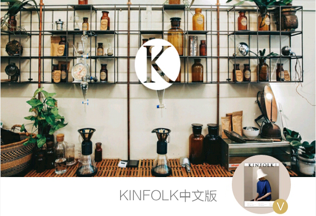
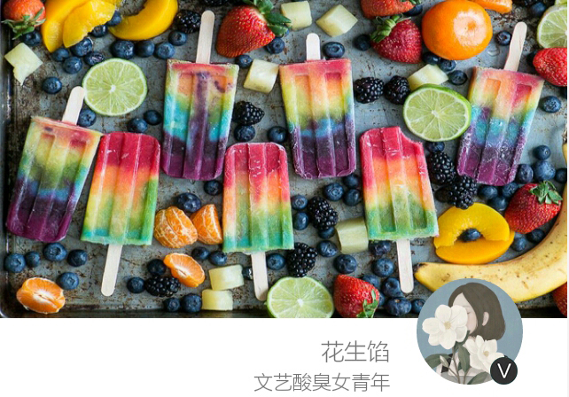

- 
-
[跨界鉴赏]
有家店| T Totaler:走遍三十多个国家就为做这杯茶
T Totaler成功之处在于它温和中间的主张即吸引了厌倦每天喝咖啡的人，也化解了宿醉后…
 275
275  7
7

-
[跨界鉴赏]
秘密基地：世界各地的树屋
小的时候总会四处角落做秘密基地，会在那里玩的不亦乐乎，后来，便迷上了树屋，总觉得那里…
3728 88 13
- 
-
[跨界鉴赏]
霜花夏物语
夏，一直是豪爽的，激烈的，我却想在这片热情中寻得一丝甜蜜的冰凉…
3728 88 13
-
[家居庭院]
七夕 | 晒礼物 “迎娶” 神秘大奖
又是一年的七夕你希望你爱的人，送给你什么呢？一束花，还是你最喜欢的香水；那么现在…
3728 88 13

-
[跨界鉴赏]
婚礼 | 那些又美貌又难忘的手捧花
当那个夏天，恋人拿着从田野上采撷的花朵，送到穿着约定好身着白衣的女孩手中，那一刻，他们…
11183 238 10